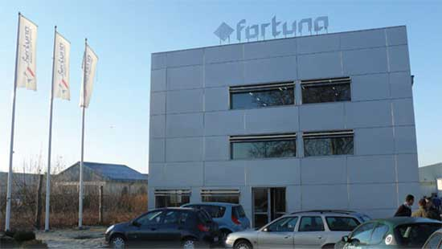

Dobrodošli u FORTUNA-INTERNATIONAL DOO BEOGRAD,
uspešnu trgovačku firmu koja je
specijalozovana u prodaji potrošnog materijala, alata
i usluga za profesionalne primene u
građevinskim i auto područjima delovanja.
Saznajte više o nama, našoj istoriji i čime se bavimo.
FORTUNA INTERNATIONAL d.o.o. Beograd
osnovana je 1997.godine kao mala porodična firma sa 5. zaposlenih,
da bi nakon 10.godina rada
postala jedan od vodećih isporučilaca alata i auto-garažne opreme.
Naša poslovna aktivnost odvija se na teritorijama Republike Srbije i Republike Crne Gore.
|
Danas Fortuna international u svom sastavu ima:
|
 |
Svi naši kupci nam čine čast time da su nas izabrali za svoje poslovne partnere, a posebno smo ponosni na činjenicu da smo više godina glavni dobavljač Mercedes Benz Srbija i Crna Gora doo, kao i na to da smo opremili i snabdeli najbolje auto servise na tržištu, kao npr. Volvo doo, AK Kompresor, Mercedes Truck, Hyundai doo, Toyota, Delta Automoto doo, Porsche SCG doo, Autopromet doo, AK Mikom, Autogarant, Grand Motors, Hit Auto, Ristic doo. Go. Ta Car.
|
© 2020 Fortuna International doo |
Coded by Ponjević Goran |
Email: office@fortuna-int.rs |